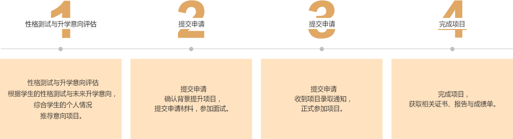
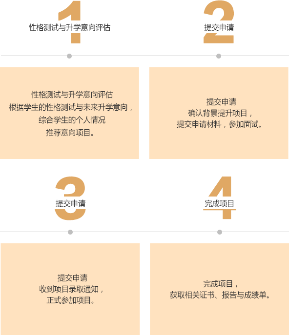

是什么是背景提升？
为什么需要背景提升？
| 项目内容差异 | 分类 | 竞赛类 | 实践类 | 海外夏校课程 | 学术课程 |
| 项目完成后证书及其他证明 | 证书 | ||||
| 奖项/奖金 |
（胜出者） |
||||
| 成绩单 | |||||
| 项目证明 | |||||
| 学术推荐信 | |||||
| 专业推荐信 |
（表现优秀者） |
||||
| 项目报告 |
部分 |
||||
| 项目申请要求 | 中学成绩（良好以上） | ||||
| 英语成绩 （雅思/托福成绩） |
|||||
| 专业课程背景 |
1.2实践类项目
1.2实践类项目
| 专业类别 | 项目名称 | 实践地点 |
| 数学 | 中科院数学建模科研实践 | 中科院数学与系统研究所 |
| 心理学 | 中科院数学建模科研实践 | 中科院数学与系统研究所 |
| 传媒 | 背景奥美 | 中科院数学与系统研究所 |
| 中科院数学建模科研实践 | 中科院数学与系统研究所 | |
| 细胞基因 | 背景奥美 | 中科院数学与系统研究所 |
| 中科院数学建模科研实践 | 中科院数学与系统研究所 | |
| 理工 | 背景奥美 | 中科院数学与系统研究所 |
| 中科院数学建模科研实践 | 中科院数学与系统研究所 | |
| 历史 | 历史课程与讲解员实践 | 中科院数学与系统研究所 |
| 金融 | 中科院数学建模科研实践 | 香港 |
1.3海外夏校课程
然海外夏校费用较高，但夏校项目对于具有海外升学规划的申请人来说，具有提升海外升学软实力的巨大优势：
1.4学术课程
短期海外课程
新加坡理工学院航天课程
伦敦艺术大学设计课程
帝国理工大学工程学课程
哥伦比亚大学诺贝尔生物科研项目
短期海外课程
新加坡理工学院航天课程
伦敦艺术大学设计课程
帝国理工大学工程学课程
哥伦比亚大学诺贝尔生物科研项目
纯学术课程
新加坡理工学院航天课程
伦敦艺术大学设计课程
新加坡理工学院航天课程
伦敦艺术大学设计课程
帝国理工大学工程学课程
哥伦比亚大学诺贝尔生物科研项目
华美留学背景提升项目的服务模式分为项目单独申请制和会员制。
（1）项目单独申请制
任何意向申请人通过华美评估体系后，可以单独申请华美留学背景提升项目名单内全部项目。
项目费用及申请费，以当年公布项目详情为准。凭该次参加项目记录
一年内购买其他华美留学产品和服务，可享受最高九折的优惠。
（1）会员制
未来有海外升学意向的申请人，可于每年一月到四月申请加入华美留学背景提升俱乐部，

更多项目详情，请与我们联系了解。
2020年华美留学背景提升计划已经开放，学位有限，有意者请咨询报名详情。